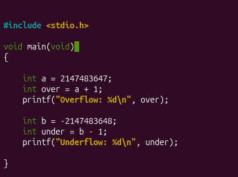
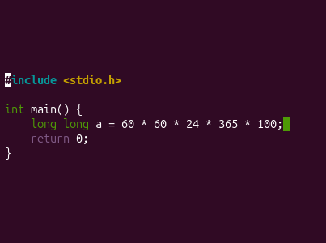
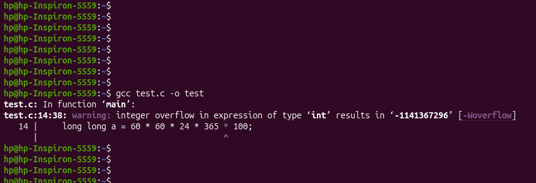
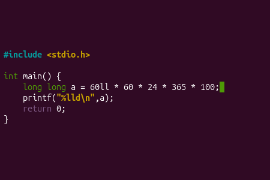
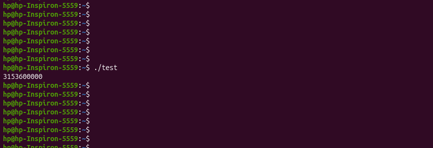

Stores whole numbers. On a 32-bit/4-byte system, or 64-bit system, will take up 4 bytes (32 bits) of memory. Can store values ranging from -2,147,483,648 to 2,147,483,647. You can manipulate how many bytes of memory are used to store the integer, and if it can store negative numbers, by adding type modifiers to the front of int. (short, long, signed, unsigned)
Syntax:
[Type_modifier] [size_modifier] int variable_name = value;
1.Declaring Integers:
To declare a variable in C,
we give it a type and a name.
For example: int age;.
2.Assignment:
We can assign it a value by adding ‘=’ and the value.
For example: int age = 25;
If you already declared just use age=25;
3.No decimal points:
Integers can not have decimal points.
If we were to store 12.99 in an integer variable,
in C it will round down to 12.
In C, signed and unsigned are type specifiers used to dictate if a variable can store negative values or only non-negative values (0 and positives).
Can hold negative values, 0 and positive values.
Default:
As standard, integer variables in C are signed integers.
Therefore declaring int x; is the same as declaring signed int x;.
Memory usage:
Within a standard 4 byte (32-bit) signed int,
the left most bit (bit 1) is used to represent
if the number is positive or negative.
This leaves 31 bits to represent the number.
Range of values (4 bytes):
-2147483648 to +2147483647.
Format Specifier:
%d or %i
int a = -45;
signed int b = -45;
signed c = 100;
An unsigned integer can be used to represent only positive values and 0. As there is no need for one bit to be allocated for the sign of the number, all bits available in memory are used to store the magnitude of the number. This means that the maximum positive value storable in an unsigned integer is twice as large as a signed integer of the same size.
Memory:
No sign bit, so the value in decimal will be a positive number.
All 32 bits can be used.
Range (for a 4 byte variable):
Between 0 and 4294967295 ( 0 to 2³²-1).
Specifiers:
%u (Or hex with %x, or Octal with %o.)
unsigned int a = 10;
unsigned a = 10;
When playing with numbers in C, make sure about the range in each and every case. If not properly checked this may lead to UB(undefined behaviour).
An overflow/underflow of signed integers in C results in undefined behaviour. This means that there is no specification within the C language governing what happens when a value is calculated for a signed integer that cannot be represented by the integer type.
Overflow:
The result of an arithmetic operation exceeds the maximum possible value of the data type.
Underflow:
The result of an arithmetic operation is less than the minimum possible value of the data type.


Small explanation:
Overflow:
a = 2147483647 (maximum value of a 32-bit signed integer).
When increased by 1, as we have exceeded the maximum limit of 32-bit signed integers,
the binary representation of the number wraps around.
This causes underflow to occur and returns -2147483648.
Underflow:
b = -2147483648 (minimum value of a 32-bit signed integer).
When decreased by 1, as we have exceeded the minimum limit of 32-bit signed integers,
the binary representation of the number wraps around.
This causes overflow to occur and returns 2147483647.
1.The number of views videos have on YouTube was originally stored as a 32-bit signed integer,
meaning it could count up to a maximum of 2,147,483,647 views.
However, in December 2014, PSY's Gangnam Style reached this number and
caused an overflow error.
The counter was upgraded to a 64-bit signed integer,
allowing up to 9,223,372,036,854,775,807 views.
2.This number also causes the Year 2038 Problem.
As older systems store the time since 1970 in a 32-bit integer,
on January 19th 2038, they will overflow causing a reset to year 1901!
int types in C also have different sizes. You can create long ints, short ints, long long ints. As well as changing how much memory is used by the variable, it also changes the range. They can be signed or unsigned.
| Data type | Size (bytes) | Minimum value | Maximum value | Output format |
|---|---|---|---|---|
| short int or short | 2 | -32768 | 32767 | %hd |
| int | 4 | -2147483648 | 2147483647 | %d or %i |
| long int or long | 4 (32-bit) 8 (64-bit) |
-231 -263 |
231 - 1 263 - 1 |
%ld |
| long long int or long long | 8 | -9223372036854775808 | 9223372036854775807 | %lld |
All sizes can be used as signed or unsigned:
1.Signed (default):
The MSB will act as sign bit (2’s complement in modern CPUs).
If we write signed long int we get the same result as long.
2.Unsigned:
All bits represent data allowing for double positive numbers
(i.e. range extended from negative/positive to 0/double positive).
| Type Combination | Typical Size | Minimum Value | Maximum Value | printf Specifier |
|---|---|---|---|---|
| short / signed short | 2 bytes | -32,768 | 32,767 | %hd |
| unsigned short | 2 bytes | 0 | 65,535 | %hu |
| int / signed int | 4 bytes | -2,147,483,648 | 2,147,483,647 | %d or %i |
| unsigned int | 4 bytes | 0 | 4,294,967,295 | %u |
| long | 8 bytes | -9.22 × 1018 | 9.22 × 1018 | %ld |
| unsigned long | 8 bytes | 0 | 1.84 × 1019 | %lu |
| long long | 8 bytes | -9.22 × 1018 | 9.22 × 1018 | %lld |
| unsigned long long | 8 bytes | 0 | 1.84 × 1019 | %llu |
A suffix can be added to a literal integer in C,
such as 100U, 500L, 42ULL to define what type,
and hence size, of integer it is.
By default, if no suffix is added to an integer,
for example 10,
it will be considered to be of type int (typically 32-bit signed).
However, adding a suffix changes this.
| Suffix | Data Type | Description |
|---|---|---|
| (no suffix) | int | Default signed integer |
| U/u | unsigned int | Unsigned integer |
| L/l | long int | Long signed integer (can be 4 bytes or 8 bytes depending on OS) |
| UL/LU | unsigned long int | Long unsigned integer |
| LL/ll | long long int | Signed integer (64 bits) |
| ULL/LLU | unsigned long long int | Unsigned integer (64 bits) |
Note:
There are no suffixes to create short integers in C.
Any literal integer e.g. 5,
will be considered to be an int.
Therefore if stored in a short variable,
it will be implicitly cast.
The data type of an expression in C depends on the data types
of the values being used in the expression.
So ‘long long total = a*b’ will evaluate ‘a*b’,
according to the data types in a and b,
and then convert the final value to have data type long long.
The suffix is required to ensure that:
(i)Avoid overflow in calculations.
By making one literal value have data type LL,
we ensure all calculations in that expression are done
using 64 bits, so no overflow occurs.
Multiplications & Math That Exceed 32-Bit int If multiplying or adding integer literals results in a number larger than 2,147,483,647, then at least one of the literals should be suffixed with LL (or ULL).
Example:

Just from above we can see that even though the size is long long, there is an integer overflow. The Fix: We just have to add a suffix to the end of any one number.

